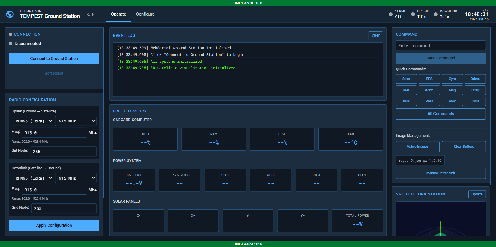
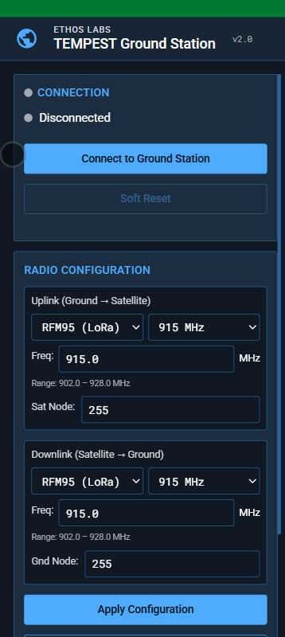
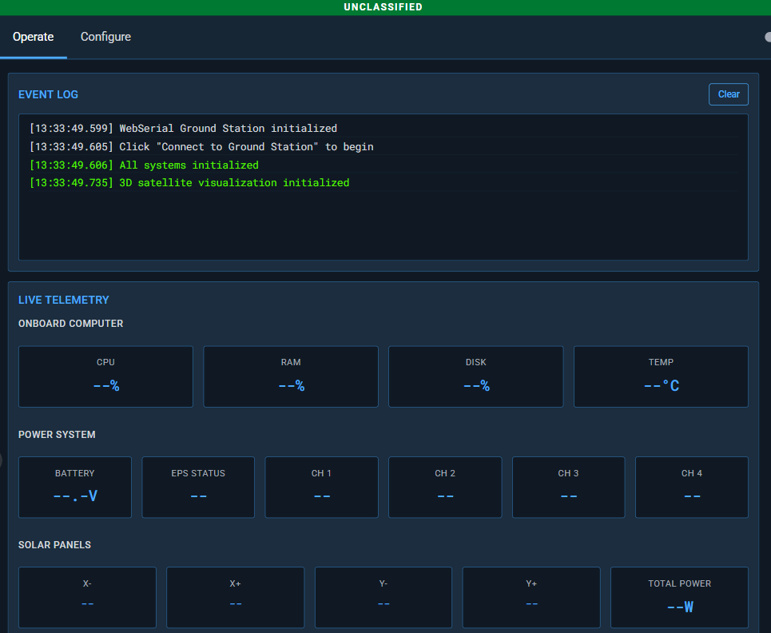
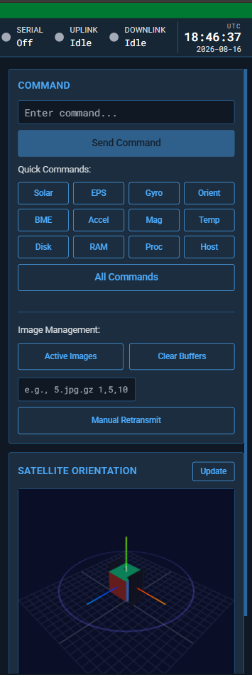
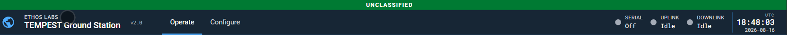

Ground Station Overview

Architecture
The TEMPEST ground station uses a browser-based interface that communicates with the satellite through a Pico MCU radio relay.
┌──────────────┐ USB CDC ┌──────────────┐ RF Link ┌──────────────┐
│ Browser │◄──(WebSerial)──►│ GS Pico MCU │◄──(RFM69/95)──►│ Satellite │
│ (Chrome) │ │ (Radio HW) │ │ (Pi Zero) │
└──────────────┘ └──────────────┘ └──────────────┘
Browser (GS): Runs entirely client-side. No server backend required. Uses the WebSerial API (Chrome/Edge) to communicate with the GS Pico MCU via USB CDC serial.
GS Pico MCU: Bridges USB serial to radio. Forwards commands from browser to satellite via radio uplink and relays telemetry from satellite to browser via radio downlink.
Design System
The ground station interface follows the Astro UXDS (US Space Force) design system:
- Dark theme with space operations color palette
- Global Status Bar (GSB) with app metadata, tabs, monitors, and UTC clock
- Classification banners (UNCLASSIFIED through TOP SECRET//SCI)
- Status symbols for connection monitoring
- Roboto / Roboto Mono typography
Interface Layout
The Operate tab uses a three-column layout:
Left Column — Connection and Radio Configuration
- Serial connection status and controls
- Radio uplink/downlink configuration (type, frequency, band, node addresses)
- TX/RX LED indicators
- Settings button (switches to Configure tab)

Middle Column — Event Log and Live Telemetry
- Event Log: Scrollable terminal showing timestamped command/response traffic
- Live Telemetry: Three sections updated by incoming packets:
- Onboard Computer: CPU, RAM, Disk, Temperature
- Power System: Battery voltage, EPS status, 4 channel states
- Solar Panels: X-, X+, Y-, Y+ voltage/current, total power

Right Column — Command and Orientation
- Command Center: Text input, quick command buttons, help reference
- Image Management: Active images, buffer controls, manual retransmit
- Satellite Orientation: 3D Three.js visualization with Roll/Pitch/Yaw readout

Global Status Bar (GSB)
The GSB spans the top of the interface and contains:
| Element | Description |
|---|---|
| App Icon | Globe SVG icon |
| App Meta | "ETHOS Labs" domain + "TEMPEST Ground Station" name |
| Version | v2.0 |
| Tabs | Operate / Configure |
| Serial Monitor | Connection status (On/Off) with status symbol |
| Uplink Monitor | TX activity flash |
| Downlink Monitor | RX activity flash |
| UTC Clock | HH:MM:SS time and YYYY-MM-DD date |

Configure Tab
The Configure tab provides settings panels:
- Serial Port: Baud rate, data bits, stop bits, parity, flow control
- Classification: Display classification level selector
- About: Application info, version, organization
Browser Requirements
| Requirement | Details |
|---|---|
| Browser | Chrome 89+ or Edge 89+ |
| API | WebSerial API |
| Connection | USB to GS Pico MCU |
| HTTPS | Required for WebSerial (or localhost) |
The live deployment is available at gs.ethoslabs.space.